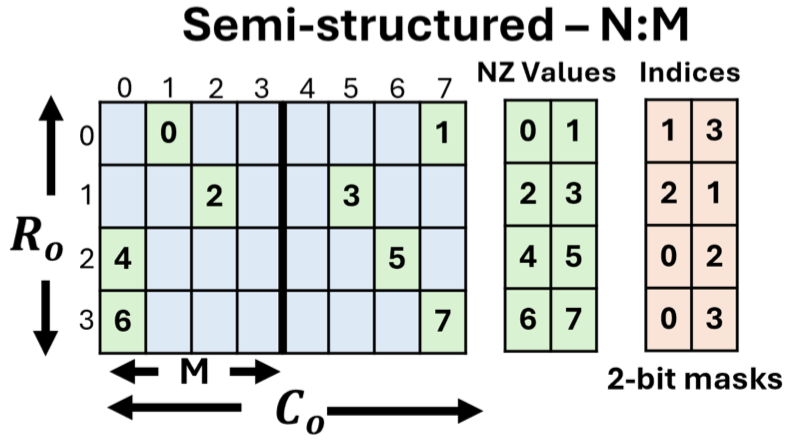
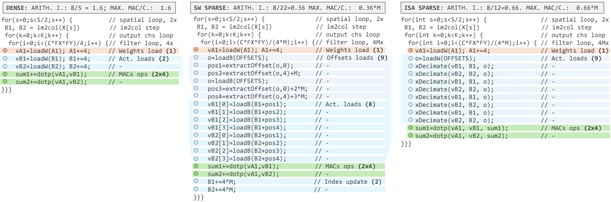
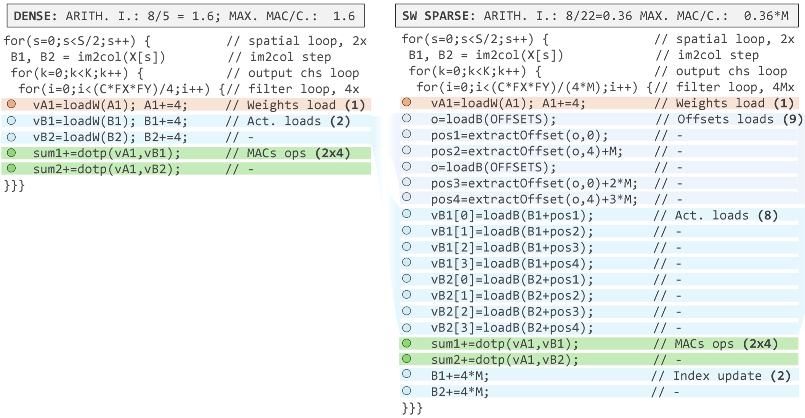
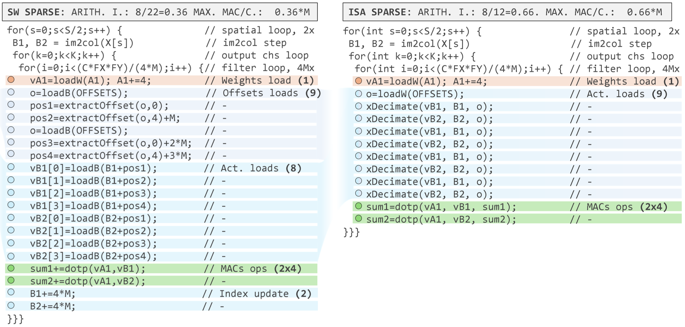
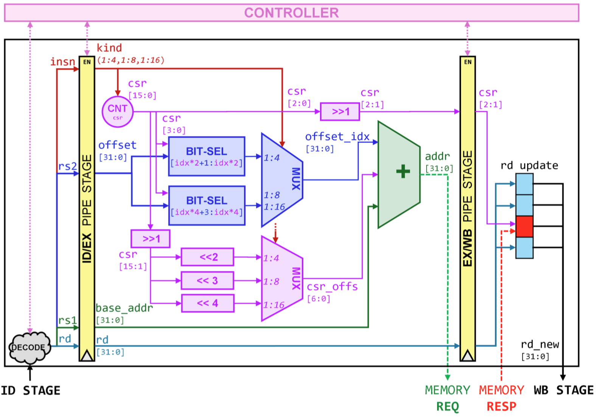
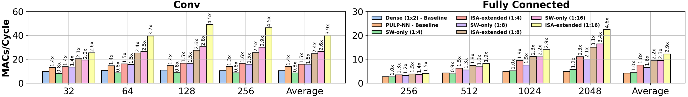
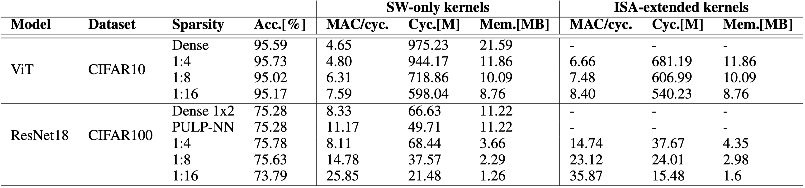
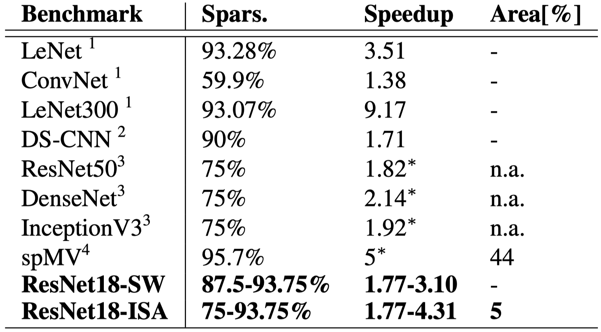

Lightweight Software Kernels and Hardware Extensions for Efficient Sparse Deep Neural Networks on Microcontrollers
MLSys 2025
gpu
memory
systems
training
quantization
Lightweight Software Kernels and Hardware Extensions for Efficient Sparse Dee…
Background & Motivation
DNNs on Microcontrollers (MCUs)
- Extreme Edge Computing: Deploying DNNs on IoT end-nodes ensures data privacy, predictable latency, and energy efficiency.
- The Challenge: MCUs operate under extremely tight memory and power constraints.
- The Solution: Extensive optimization techniques like quantization and pruning are mandatory.
The Pruning Dilemma
- Unstructured Pruning: Highest compression, but irregular memory accesses ruin arithmetic density. Often slower than dense networks on MCUs.
- Structured Pruning (Block/Channel): Hardware-friendly and regular, but causes massive accuracy drops on complex tasks.
- Semi-Structured (N:M) Pruning: A middle ground. Exactly N non-zero (NZ) weights in every block of M. Balances hardware parallelism with model accuracy.

N:M Sparsity Formats

- Only non-zero values are stored.
- Relative indices are compressed (e.g., 4 bits for 1:8 sparsity).
- Highly memory-efficient even at low sparsity ratios compared to traditional formats like CSR.
Limitations of Existing Solutions
- High-End Hardware: GPUs (e.g., NVIDIA A100) support N:M sparsity, but are entirely out of scope for MCUs.
- Existing MCU Hardware Extensions: Solutions like Streaming Semantic Registers (SSRs) target unstructured sparsity but require massive silicon area overheads (up to 44%).
- Pure Software Solutions: MCU Instruction Set Architectures (ISAs) are too simple. Unpacking compressed indices in software creates a massive instruction bottleneck.
We need a lightweight combination of software kernels and a minimal ISA extension.
Motivation
- Goal: Bridge the gap between dedicated hardware accelerators and RISC-V MCUs.
- Approach: Unlock Pareto-optimal trade-offs (accuracy vs. latency vs. area) for N:M sparsity using a lightweight HW/SW co-design.
System Design
System Architecture Overview
A three-fold contribution targeting multi-core RISC-V MCUs:
- Software Kernels: Optimized routines for 1:4, 1:8, and 1:16 N:M sparsity.
- ISA Extension: A lightweight custom instruction (
xDecimate) to eliminate software bottlenecks. - Compiler Integration: End-to-end network deployment via the MATCH compiler.
Software Kernels: Decimate Im2col

- Standard Dense Convolutions: Use
im2colto reorganize input patches into 1D arrays for SIMD dot-products. - Sparse Convolutions: Different output channels have different non-zero weight indices.
- Decimate Im2col: Keeps the standard
im2colbuffer, but adds an inner-loop step to compute relative offsets and load only the activations corresponding to non-zero weights.
The Software Bottleneck

- In the software-only sparse kernel, 19 out of 22 instructions in the inner loop are wasted on unpacking indices and packing registers.
- Actual MAC operations are starved.
Hardware ISA Extension: xDecimate
- Concept: Merge index extraction and memory loading into a single instruction.
- Syntax:
xdecimate rd, rs1, rs2rs1: Base address of theim2colbuffer.rs2: Packed non-zero offsets.rd: Destination register for the loaded activation.
- Mechanism: Uses a hardware CSR to auto-increment and point to the correct data block on consecutive calls.

xDecimate Microarchitecture

- Implemented as an eXtension Functional Unit (XFU) in the RISC-V pipeline (Decode, Execute, Write-Back).
- Ultra-Lightweight: Incurs an area overhead of only 5% (compared to 44% for prior unstructured sparsity extensions).
Compiler Integration (MATCH)
- Pattern Recognition: Automatically identifies 1:4, 1:8, and 1:16 sparsity patterns in the DNN graph.
- Tiling for Sparse Kernels: Adjusts memory tiles based on the reduced weight dimensions and the index overhead.
- Memory Storage: Interleaves compressed weights and indices in L2 memory so both can be fetched in a single DMA transaction.
Evaluation
Environment Setup
- Platform: GVSoC virtual platform simulating the Vega PULP SoC (8-core RISC-V cluster, 22nm).
- Quantization: 8-bit integers.
- Benchmarks:
- ResNet18 (CIFAR100) - N:M pruning on 3x3 convolutions.
- ViT-Small (CIFAR10) - N:M pruning on Fully-Connected (FC) layers.
- Baselines: Dense 1x2 unrolled kernels and state-of-the-art PULP-NN dense library.
Single Layer Performance

- Software-Only: Up to 2.6x speedup for Convolutions and 3.4x for FC layers (at 1:16 sparsity).
- ISA-Extended:
xDecimatepushes Convolution speedups up to 3.9x, making even 1:4 sparsity highly advantageous.
End-to-End Performance: ViT-Small
- Sparsifying FC layers accounts for 60% of operations.
- Accuracy: Minimal drop (0.42% drop at 1:16 sparsity).
- Latency: 1.81x speedup over the dense baseline using the ISA extension.
- Memory: 2.34x lower memory footprint.

End-to-End Performance: ResNet18
- Sparsified convolutions account for 98% of total MACs.
- Accuracy: 1:8 sparsity actually achieves higher accuracy (+0.35%) than the dense network.
- Latency: 2.07x speedup over the best dense baseline (PULP-NN) using the ISA extension.
- Memory: 3.77x lower memory footprint.
Comparison with SOTA
- Area Efficiency: Achieves competitive speedups (1.77x - 4.31x) with only a 5% area overhead.
- Prior Art: Existing unstructured sparsity hardware extensions (e.g., SSRs) require up to 44% area overhead on similar FPU-less cores.
- Conclusion: N:M sparsity with lightweight hardware support provides a highly practical, Pareto-optimal solution for extreme edge MCUs.
